陳宏佳 博士 Hung-Chia Chen, Ph.D.
博士論文《探討資訊科技在音樂製作產業可持續發展的作用》——以深厚資管學術底蘊，融合「大數據分析」、「生成式人工智慧」、「數位音樂科技」與「人文藝術美學」，具備跨領域落地實務與高等教育開創力。
資訊科技人：前沿 AI 技術藍圖、跨域教學與國家級數位轉型
國立臺北科技大學管理博士（主修資訊管理）。深耕生成式 AI（NVIDIA RAG LLM 認證）、商業智慧、大數據分析與系統網路架構。曾任經濟部產業發展署審查委員、經濟部「新世代網路創新應用服務計畫」總監，深度參與執行國家級 e-Taiwan 與 m-Taiwan 大型示範計畫，並持有包括微軟 MCSE/MCSA 及思科 CCNA 在內之專業技術認證。
一、 資訊技術科技發展地圖與開課教學藍圖 (Four-Layer Curriculum Roadmap)
TECHNOLOGY EVOLUTION MAP依據陳宏佳博士歷年於各大專院校開設之資訊科技實務課程，系統化歸納之四層級技術演進架構圖：
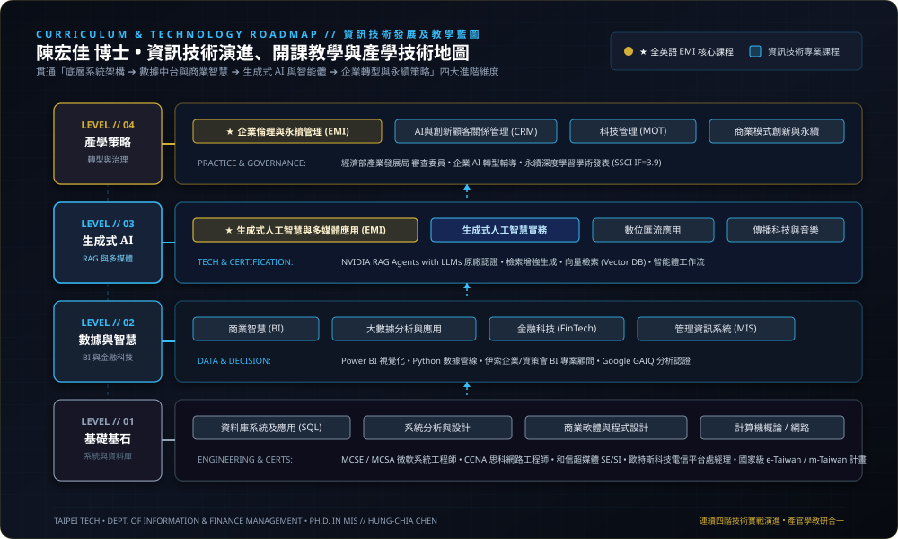
二、 人工智慧與大數據跨域決策應用架構 (AI & Data-Driven Application Framework)
NVIDIA RAG & DEEP LEARNING FRAMEWORK本圖呈現陳宏佳博士之核心學術研究（SSCI 深度學習期刊論文）與前沿生成式 AI（NVIDIA RAG LLM 原廠認證），如何垂直整合數據底層、演算模型與企業智慧決策之完整技術脈絡：
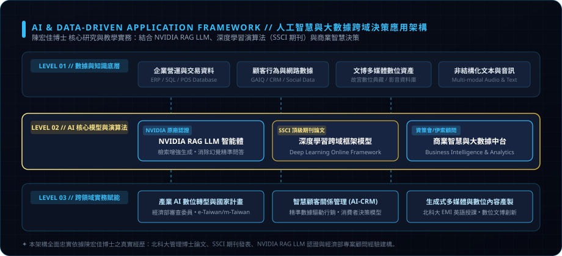
🏛️ 國家級旗艦專案領導（e-Taiwan & m-Taiwan）
深度參與執行行政院 e-Taiwan（數位台灣） 與 m-Taiwan（行動台灣） 無線示範整合建置計畫，執行規模達數億元，實質輔導眾多企業完成無線網路建置與數位化升級。
- ✦ 經濟部無線寬頻網路示範應用計畫：宜蘭縣、臺大醫院、臺北市立動物園專案經理與專案企畫
- ✦ 基隆市政府 e-Taiwan：無線推廣整合建置專案業務
- ✦ 高雄市政府工務局：E化學習網知識管理系統總監
🌐 經濟部創新計畫總監與審查委員
獲聘擔任經濟部產業發展署 審查委員，負責數位升級與 AI 轉型診斷審查；並曾出任經濟部「新世代網路創新應用服務計畫」政府專案總監。
- ✦ SSCI 頂級期刊發表 (Sustainability 12(2))：深入探討深度學習在數位製作與永續轉型中之關鍵角色
- ✦ 國際期刊發表 (IJECS 13(1))：提出深度學習線上多媒體創新框架
- ✦ NVIDIA 原廠認證：持有 NVIDIA RAG LLM (檢索增強生成大型語言模型) 專業認證
三、 國際原廠專業技術認證與知名企業技術顧問服務
OFFICIAL CERTIFICATIONS & CONSULTING持有之官方專業國際技術證照：
- ✦ NVIDIA Certified: RAG Agents with LLMs (大型語言模型檢索增強生成)
- ✦ Google Certified: GAIQ (Google Analytics Individual Qualification)
- ✦ Microsoft Certified Systems Engineer (MCSE)
- ✦ Microsoft Certified Systems Administrator (MCSA)
- ✦ Microsoft Certified Professional System (MCPS)
- ✦ Cisco Certified Network Associate (CCNA)
知名企業與機構技術顧問服務：
- ✦ 伊索企業 商業智慧（BI）教學及企業顧問
- ✦ 資策會 商業智慧教學內容設計專案總監、國語學習平台總監
- ✦ 中華電信 MOD GAME MALL Portal 建置總監、MOD 生活風開發技術指導
- ✦ 華克文化、數位遊戲王 數位新事業處企業顧問
- ✦ 明星秀多媒體科技 專案辦公室顧問
- ✦ 陳立教育集團、明道中學 STEAM 數位教材與學習平台總監
策略管理人：兩岸創辦治理、金牌競賽指導與品牌行銷
創辦晶鴻創意科技股份有限公司並設立台灣台北總部及大陸分公司。歷任歐特斯科技電信平台事業處經理、華視-台灣夢工場動畫應用處經理、致茂電子-視動環球網點製作處經理與和信超媒體。帶領學生團隊勇奪 2025 全國 ATCC 商業個案大賽雙料冠亞軍、2026 全國第二名與全台北市青年舉政提案總冠軍。
一、 創業歷練與公司經營治理實務（台灣台北總部及大陸分公司）
CROSS-STRAIT ENTREPRENEURSHIP創立晶鴻創意科技（台灣總部與大陸分公司）
創辦「晶鴻創意科技股份有限公司」並擔任執行長，設立台灣台北總部及大陸分公司，綜理跨兩岸之多媒體數位內容產製、數位音樂製作、電商平台運營與品牌數位行銷。經歷完整企業草創融資、兩岸團隊管理、現金流控制與跨國商務合作。
電信與科技高階經理人歷練
歷任歐特斯科技電信平台事業處經理、華視-台灣夢工場科技動畫應用事業處經理、致茂電子-視動環球科技網點製作處經理、和信超媒體 SE / SI / Producer，深諳多事業體營運與專案治理。
產業公協會治理與社會職責
擔任台北市流行音樂產業工會第一、二屆副理事長，協助產官學溝通與產業政策建言；並擔任 SOSA 台北市消費者電子商務協會技術顧問，具備產業公協會組織治理視角。
二、 帶領學生參加全國指標競賽獲獎實績（傳奇連霸紀錄）
NATIONAL COMPETITION MENTORSHIP三、 創新創業教學、市場行銷規劃與品牌賦能實務
ENTREPRENEURSHIP & BRANDING💡 創新創業與商業模式推演
講授管理學 (EMI)、策略管理、創新管理與精實創業，結合理論與真實商業案例，指導學生建構商業模式九宮格與精實創業驗證。
📊 大數據行銷與消費者洞察
講授數據驅動行銷、顧客關係管理 (CRM)、消費者行為與網路廣告分析；長年受邀至國立空中大學講授數位行銷新思維。
💎 品牌定位與企業策略治理
主導極上教育集團 CIS 企業識別設計、遠雄人文博物館網路行銷 KOL 專案、雀巢能恩奶粉網路行銷與京華城 KIOSK 電子商務系統整合。
數位媒體音樂人：白金金曲、影音編導與國際影音大獎
兼具文博數位多媒體架構、影視節目編導與配樂、華語白金唱片錄音工程，以及大型跨年音樂會現場統籌。榮獲法國巴黎 FIAMP 國際影音大獎最高榮譽首獎與美國博物館協會 (AAM) 繆司獎銀牌榮譽。
一、 國際與國家級重要大獎獲獎清單與機構榮譽榜
GLOBAL HONORS ARCHIVAL LIST陳宏佳博士主導之數位多媒體與數位典藏專案，多次代表台灣叩關世界級文博影音大賽，完整獲獎清單與主辦單位紀實如下：
| 年份 | 國際 / 國家大獎獎項 | 獲獎作品專案名稱 | 主辦機構 / 地點 | 主導職責與專業貢獻 |
|---|---|---|---|---|
| 2006 | 👑 最高首獎 Grand Prix | 國立故宮博物院《玉之靈》 主題多媒體光碟與網站專案 |
FIAMP 國際影音大賽 📍 法國巴黎 (Paris) |
擔任專案經理、音樂音效總監。以環繞聲效結合故宮玉器文化意境，擊敗全球知名文博機構勇奪首獎。 |
| 2002 | 🥈 銀牌獎 Silver Award | 故宮《佛經附圖：藏漢藝術小品》 多媒體互動光碟 |
美國博物館協會 (AAM) 繆司獎 📍 美國 (MUSE Awards) |
擔任專案製作統籌、技術指導、配樂與成音。精準結合藏漢宗教美術與互動多媒體。 |
| 2002 | 優等獎 Excellence | 故宮《佛經附圖：藏漢藝術小品》 |
教育部 第十屆金學獎 📍 台灣 台北 (Taipei) |
榮獲教育部社會教育有聲教育出版品優等肯定。 |
| 2001 | 特優獎 & 產品獎 | 故宮《大汗的世紀－蒙元時代書畫藝術》 |
金學獎特優 / 經濟部數位內容產品獎 📍 台灣 台北 (Taipei) |
擔任音樂音效總監、專案經理。榮獲經濟部數位內容產品獎與金學獎雙重最高榮譽。 |
| 2001 | 榮譽獎 Honorable Mention | 故宮《大汗的世紀－蒙元時代書畫藝術》 |
AAM 繆司獎 (MUSE Awards) 📍 美國華盛頓 (Washington D.C.) |
國際評審團高度讚賞其歷史情境音效重現與互動介面流暢度。 |
| 2001 | 國際優良網站獎 | 國立故宮博物院全球資訊網 |
美國網際網路獎 (Web Awards) 📍 美國 / 行政院研考會推薦 |
多媒體系統整合與多語影音導覽架構建置。 |
法國巴黎 FIAMP 國際影音大獎 • 最高榮譽首獎
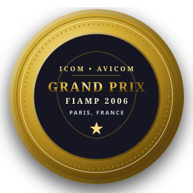
美國博物館協會 AAM MUSE Awards • 銀牌獎 (Silver)
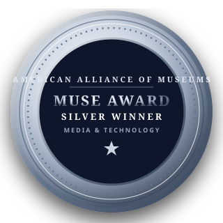
二、 華語流行音樂白金唱片錄音工程與專輯製作（13 張典藏大碟全紀錄）
13 MASTER RECORDINGS
任職於滾石唱片（擺渡人音樂製作）期間，深度參與華語流行音樂全盛期多張重量級白金唱片之錄音工程及專輯製作。
每張大碟皆採用高解析真實封面，實體 LP 封套無遮擋展示。滑鼠懸停即可啟動 3D 浮雕並將黑膠唱片緩緩滑出：
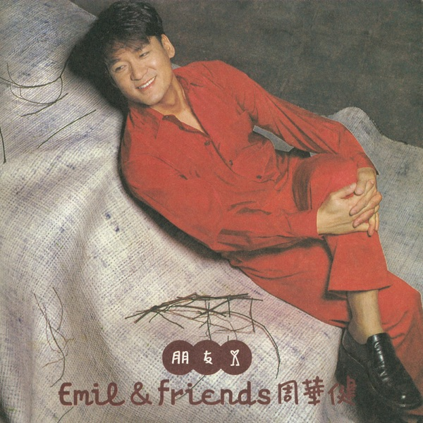
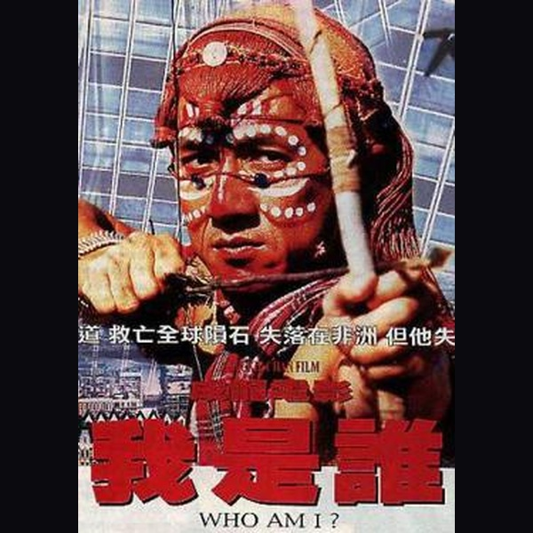
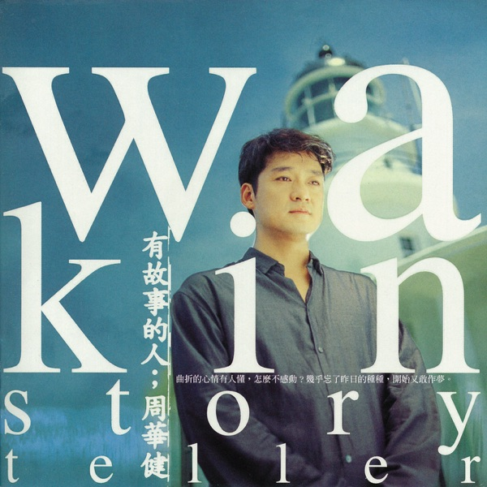
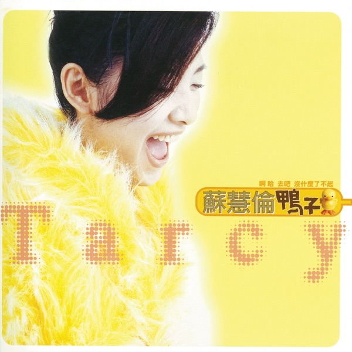
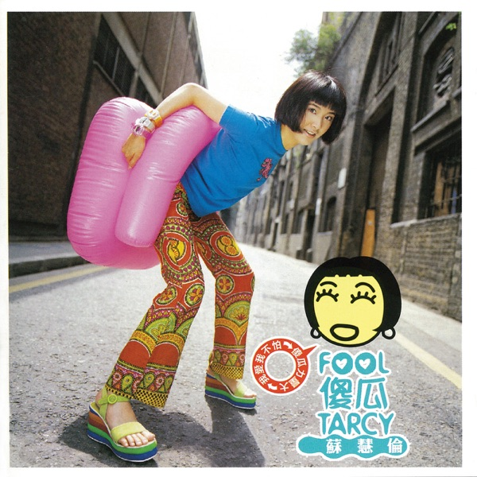
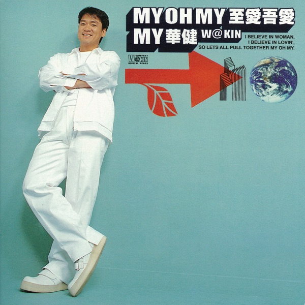
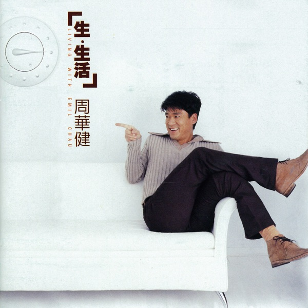
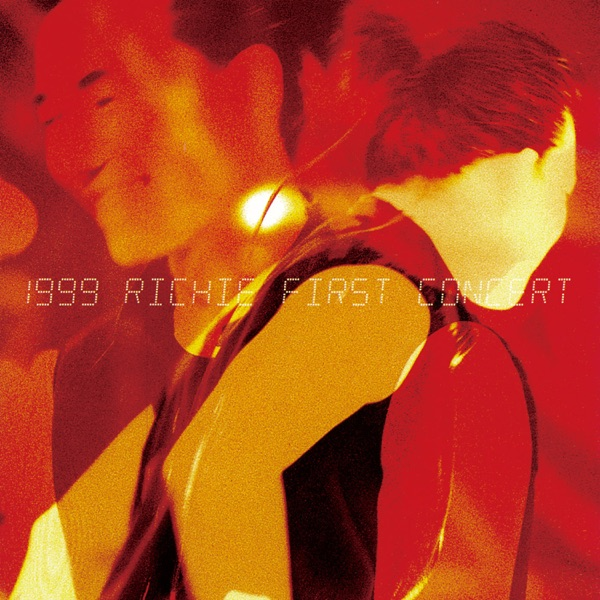
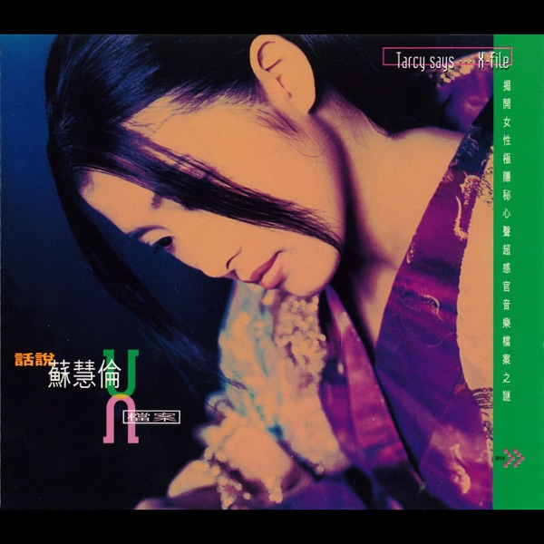
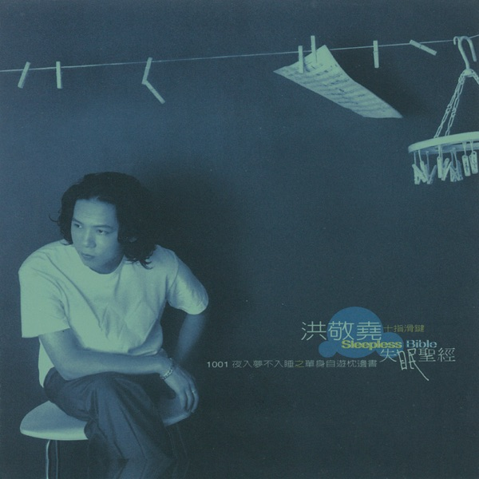
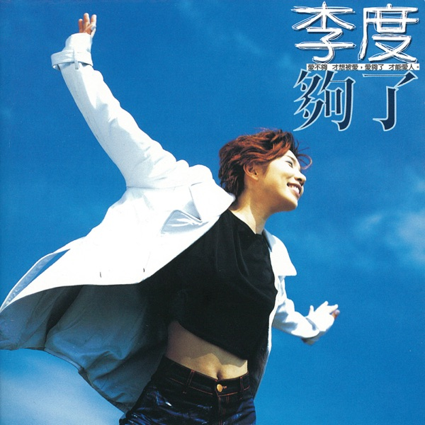
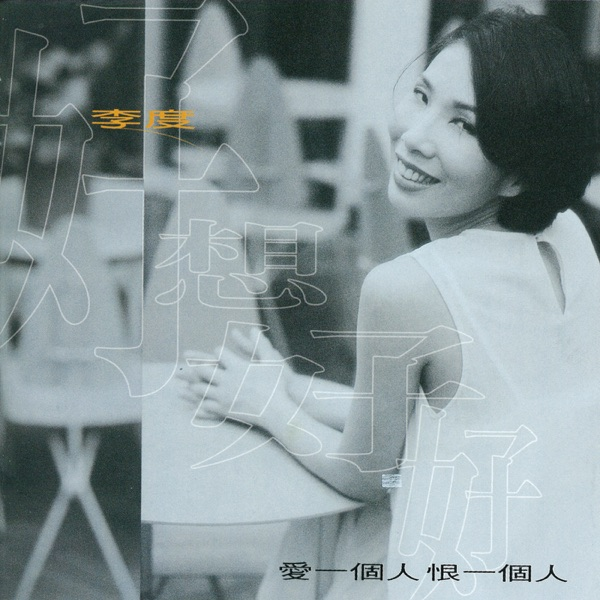
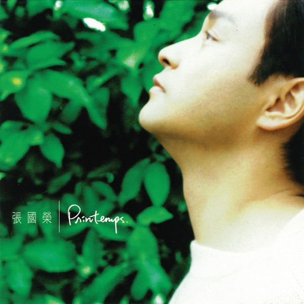
三、 國立故宮博物院 互動數位多媒體光碟及主題網站製作專案
NPM MULTIMEDIA CD-ROM & PORTAL PROJECTS主導故宮數位化初期多部代表性互動多媒體光碟（CD-ROM）與入口網站專案，包含實體壓克力盒裝結構、光碟盤面雷射光澤、雙語資料庫導覽引擎與原創古典配樂：
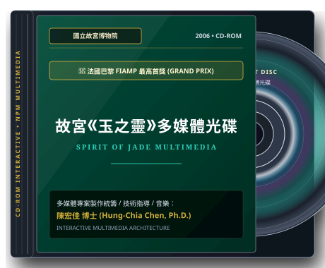
擔任專案經理與音樂音效總監。以數位環繞音效結合故宮珍藏玉器文化意境，榮獲全球文博影音最高首獎。
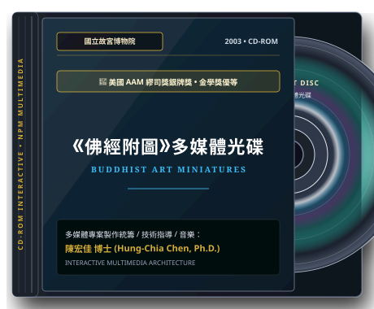
擔任專案製作統籌、技術指導與原創配樂。榮獲美國 AAM 國際繆司獎銀牌與教育部第十屆金學獎優等。
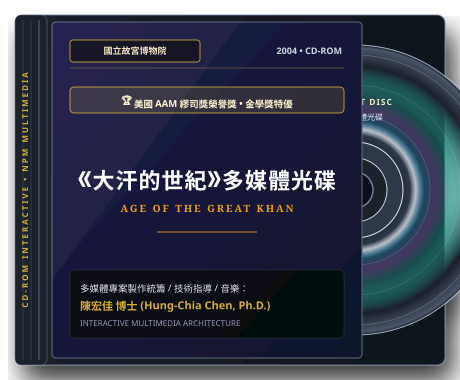
擔任音樂音效總監與專案經理。蒙元帝國雄偉交響音效重現，榮獲經濟部與 AAM 榮譽獎。
四、 大型跨年現場音樂演出工程與電視廣播節目編導配樂
BROADCASTING & CONCERT PRODUCTION🎤 大型跨年與現場電視直播工程統籌
- ✦ 2022、2023 連續兩屆《台北祝福國際跨年音樂會》：音樂總監（統籌大型交響樂團、合唱團演出與現場聲學控制）。
- ✦ 周華健世界巡迴演唱會 外場音樂監控 PGM 製作：台北、台中、台南、高雄、花蓮、北京、昆明、溫州、香港紅磡、馬來西亞等巡演場次。
- ✦ 幻眼樂隊全省巡迴演唱會：音樂前期 PGM 及 MV 製作。
- ✦ 施文彬“文跡起武”PUB 全省巡迴演唱會 / 李度 TICC 演唱會 / 中廣民歌演唱會：現場音樂先期 PGM 製作。
📺 影視戲劇原創配樂與廣播節目製作
- ✦ 和信超媒體 JUICE 頻道、GameGX 遊戲頻道、財經頻道：節目製作人、導播與線上主持。
- ✦ 傳訊電視《大地頻道》：電視節目原創配樂作曲、節目片頭片尾音效設計。
- ✦ 中視電視節目《台灣傳奇》：戲劇節目成音、音效設計與多軌混音工程。
- ✦ 台灣三立電視台《我在159》單元劇 / 三立偶像劇《命中注定我愛你》番外篇：戲劇配樂製作與演出。
- ✦ 院線電影《幸福妄想症》：電影主題曲編寫製作、電影配樂製作及演出。
三域跨界綜效全景：科技 × 管理 × 影音 的極致融合
陳宏佳博士並非單一維度的專才，而是少數能將「資訊工程的嚴謹深度」、「商業經營的敏銳戰略」與「數位人文的感性美學」融會貫通的跨領域引領者。從主持國家級數億元計畫到奪得文博界奧斯卡首獎，本策展專區系統化呈現三域交織的綜效軌跡。
- ✦ 生成式 AI：NVIDIA RAG LLM 原廠認證
- ✦ 系統網路：MCSE / MCSA / CCNA 證照
- ✦ 前沿演算法：深度學習跨域框架模型 (SSCI)
- ✦ 國家計畫：e-Taiwan & m-Taiwan 無線整合
- ✦ 企業治理：創立晶鴻科技（台灣總部與大陸分公司）
- ✦ 競賽金牌：指導 2025 ATCC 全國第一與第二名
- ✦ 首都市政：指導 2025 北市青年舉政提案總冠軍
- ✦ 高管經歷：歐特斯經理、致茂視動經理、和信超媒體
- ✦ 世界大獎：巴黎 FIAMP 最高首獎 (Grand Prix)
- ✦ 國際繆司：美國 AAM MUSE Awards 銀牌獎
- ✦ 白金大碟：參與滾石唱片 13 張重量級白金專輯製作
- ✦ 現場統籌：連續兩屆台北跨年音樂會音樂總監
一、 跨領域技能關係與多元應用維度矩陣 (Cross-Domain Competency Matrix)
SYNERGY CAPABILITY MAPPING| 跨領域交集維度 | 核心整合技能與工具 | 跨領域實際應用場域與案例 | 創造之標竿成果與價值 |
|---|---|---|---|
|
【科技 × 管理】 AI 決策與數位轉型 |
商業智慧 (BI)、大數據分析、生成式 AI (RAG)、企業級 ERP/CRM 整合、雲端資料架構。 |
• 擔任經濟部產業發展署 審查委員，執行企業 AI 成熟度與數位轉型審查。 • 主持執行國家級 e-Taiwan 與 m-Taiwan 計畫，推動公部門與醫療院所無線智慧化。 |
國家級轉型賦能 輔導數十家企業導入數據決策與數位升級。 |
|
【科技 × 影音】 數位典藏與 AI 影音科技 |
多媒體系統整合、數位環繞音訊工程、深度學習音樂演算法 (Deep Learning)、互動式 CD-ROM 引擎。 |
• 主導國立故宮博物院《玉之靈》與《佛經附圖》多媒體光碟與主題網站建置。 • 於 SSCI 國際頂級期刊 (Sustainability) 發表深度學習在音樂可持續發展之研究論文。 |
國際最高首獎 榮獲法國巴黎 FIAMP Grand Prix 與美國 AAM 銀牌。 |
|
【管理 × 影音】 文化創意創業與 IP 運營 |
文創企業治理、跨兩岸供應鏈與分公司經營、娛樂公協會治理、全通路數位行銷、大型演藝專案管理。 |
• 創辦晶鴻創意科技，於台北設立總部並拓展大陸分公司，整合電商與數位影音。 • 出任台北市流行音樂產業工會副理事長，參與產業政策溝通與產學合作。 • 統籌台北祝福國際跨年音樂會現場大型製作。 |
兩岸跨界經營 成功打通文化創意與商業獲利的完整價值鏈。 |
|
【★ 三域大成頂峰】 科技＋管理＋人文藝術 |
管理學博士學術厚度、商業模式推演、跨領域教學設計、跨學科高階簡報說服力。 |
• 博士論文深入探討資訊科技在音樂產業可持續發展之跨界作用。 • 指導北科大跨系團隊參加 ATCC 全國大專商業個案大賽，以科技解方結合商戰模式奪冠。 |
全國雙料冠亞軍 指導學生連續橫掃全國第一與全台北總冠軍。 |
二、 五大跨領域代表性標竿案例 (Benchmark Cross-Domain Case Studies)
INTERACTIVE CASE STUDIES點擊下方標籤即可動態篩選檢視不同跨界維度之實戰典範：
故宮數位多媒體叩關國際頂級首獎
跨域整合情境：面對國家級文博瑰寶之數位化挑戰，陳宏佳博士擔任專案經理與音樂音效總監，一手包辦雙語互動導覽系統之資訊架構，並親自為故宮珍藏玉器與藏漢佛經藝術譜寫原創情境配樂。
晶鴻創意科技之跨兩岸創辦與治理
跨域整合情境：創辦「晶鴻創意科技股份有限公司」並親任執行長，設立台灣台北總部及大陸分公司。將錄音室音樂內容產製、多媒體影視製作與電商數位行銷平台相互嫁接，親歷草創融資、跨國合約與現金流治理。
指導跨系學生連霸全國商業個案大賽
跨域整合情境：指導北科大學生跨足資財系、經管系與設計學院，以「商業模式九宮格推演」結合「AI 數據洞察」與「影視級高說服力 Pitch 簡報演繹」，叩關全國最具代表性之 ATCC 商業大賽與臺北市政府市政競賽。
e-Taiwan 與 m-Taiwan 大型無線整合
跨域整合情境：深度參與執行行政院國家級 e-Taiwan 與 m-Taiwan 計畫，負責宜蘭縣示範區、臺大醫院預採購整合建置與基隆市政府推廣專案，協調電信業者、硬體廠商與公部門跨界合作。
深度學習與音樂產業永續之 SSCI 論文
跨域整合情境：博士論文以《探討資訊科技在音樂製作產業可持續發展的作用》為核心，結合多年白金唱片錄音師實務與深度學習演算模型，探討 AI 與資訊科技如何賦能文創音樂產業永續轉型。